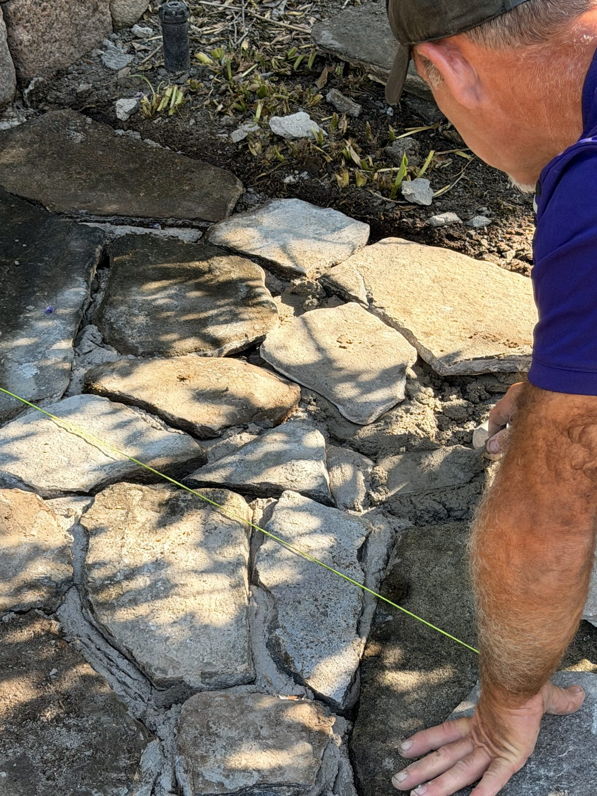

The Sowinski Terrace
Irregular flagstone, set in a full mortar bed and cut by hand so every stone meets the next one on its own line. These are the photos most contractors don't take — the middle of the job, where it's either being done right or it isn't.
- Scope
- Flagstone terrace
- Stone
- Irregular flag
- Set
- Full mortar bed
- Joints
- Hand-cut, packed


The string goes down first
Before a single stone is set, the line is pulled and the grade is fixed to it. Everything after this point is measured against that string — height, pitch, and the run of the field. Get it wrong here and no amount of good stonework hides it.

Cut to the neighbor, not to the gap
Irregular flag is chosen and shaped for the space it's going into, not dropped in and grouted around. The edge against the bed is where that shows — the stone follows the line of the garden instead of being trimmed off square at it.

Set solid, not floated
Full mortar under every stone, and the joints packed rather than dusted over. That's what keeps a stone from rocking underfoot the first spring after the ground moves — and it's why this costs what it costs.
Working around what's already there
The beds, the plantings, and the irrigation heads were all in the ground before we were. Stone came right up to them and left them working. A terrace that arrives by wrecking the yard around it isn't finished — it's half a job with a second bill attached.
Anyone can set the middle. The joint is the part that tells you who built it.
Get a free quoteLicensed & insured Massachusetts crews · our own people, not subcontracted out